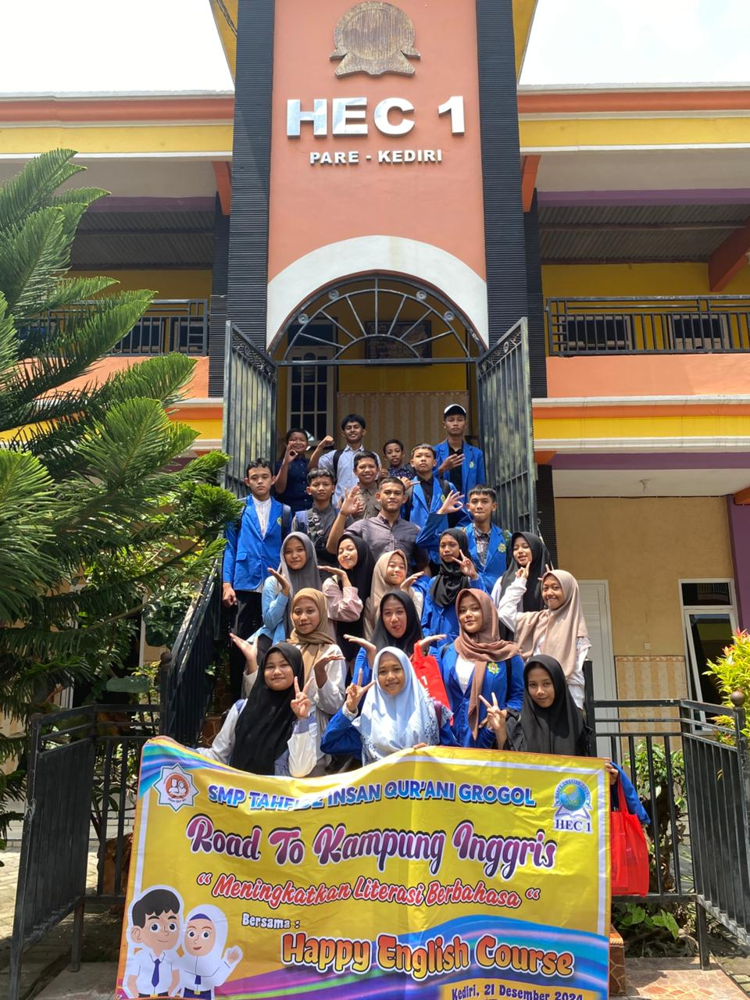
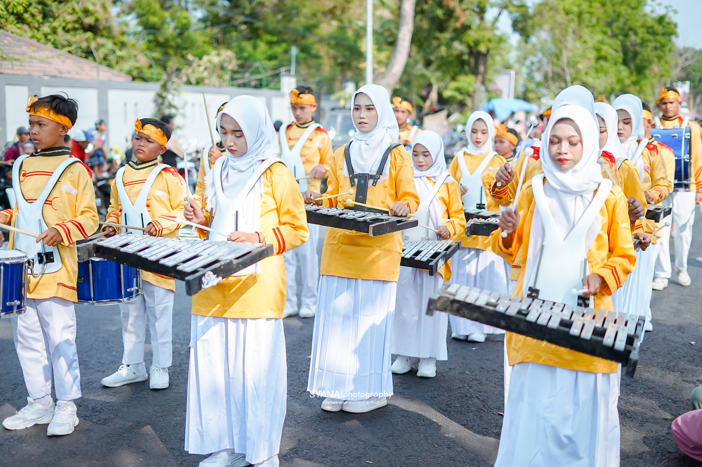
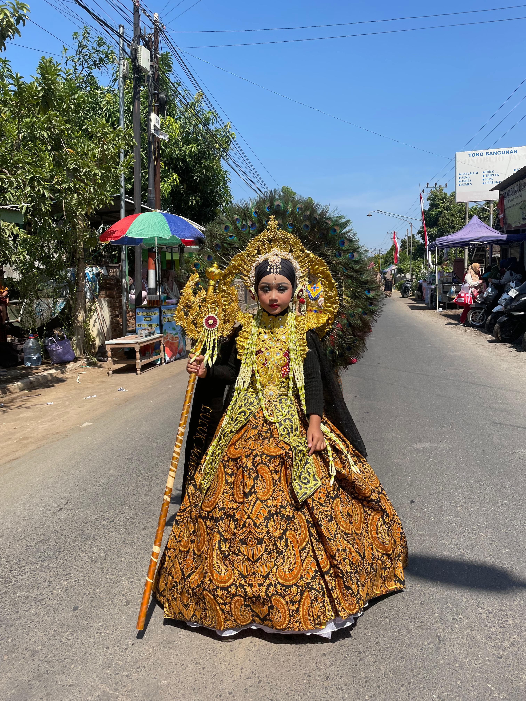
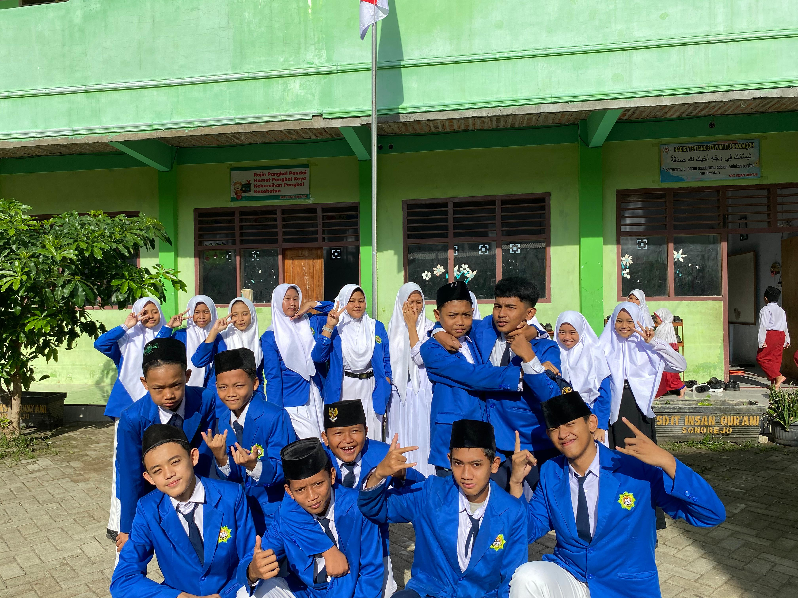
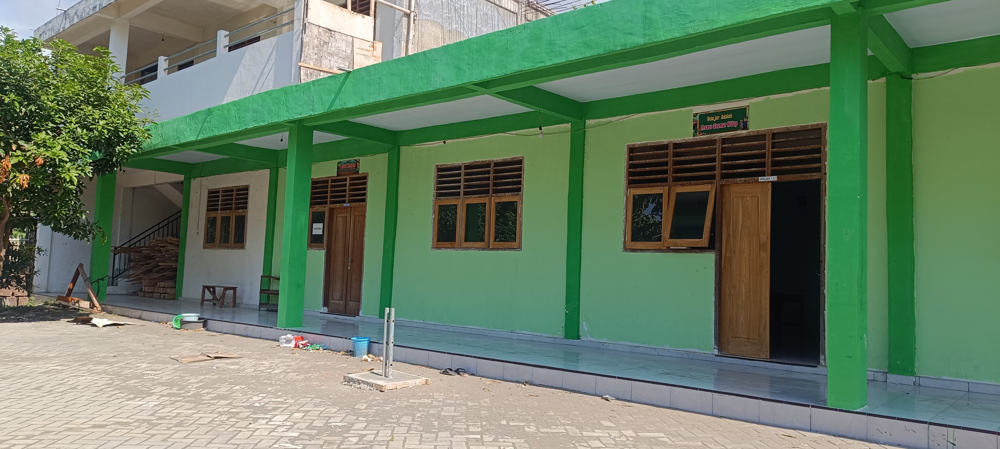

Sejarah Singkat
Berdirinya Yayasan
SEJARAH SINGKAT BERDIRINYA YAYASAN PENDIDIKAN ISLAM INSAN QUR`ANI DAN PONDOK PESANTREN JAMI`ATUL QUR`AN Awalnya, pada pertengahan tahun 2012, diadakan pengajian al-Qur`an ba`da maghrib dengan meminjam Mushola Haji Utsman (Alm.), milik Ibu Mutammimah, dusun Sumbergambi Kidul, RT 003 RW 002, desa Sonorejo, Kec. Grogol, Kab. Kediri yang waktu itu diikuti anak-anak kecil kurang lebih 15 anak. Lambat laun semakin bertambah santri. Maka pengelola berinisiatif untuk tidak hanya mengadakan pengajian al-Qur’an ba’da maghrib saja, tapi ditambah ba’da Ashar. Maka pengelola bergerilya mengajak tetangga yang punya kemampuan membaca al-Qur’an untuk ikut nimbrung mengajar anak-anak yang jumlahnya semakin banyak. Waktu itu yang direkrut sebagai ustadzah adalah ibu Binti, ibu Dewi, ibu Dziroh, Ibu Anis, ibu Rom, dan Ibu Lia. Pada tanggal 1 September 2012 bertepatan acara Halal Bihalal diadakan peresmian TPQ Qur-any `Utsmany di mushola Haji Utsman secara sederhana dengan menghadirkan kepala KUA Kec. Grogol. Kemudian pengelola TPQ Qur-any `Utsmany mengajukan ijin operasional dari Kemenag Kab. Kediri No. Regrestasi 012350604028 tertanggal 31 Agustus 2012. Sebelumnya pengelola juga mendaftarkan lembaga ke notaris tertanggal 17 April 2013 no. 21 atas nama Notaris Achmadin, S.H., dengan nama Lembaga Pendidikan Islam Terpadu Insan Qur’ani disingkat LPIT IQ. LPIT IQ ini membawahi dan mewadahi PAUD dan TPQ. Awal tahun 2013 mulai dirintis Kelompok Bermain (Play Group) dengan nama PAUD Insan Qur`ani dan pada waktu itu banyak orang tua yang menitipkan anak-anaknya di PAUD ini. Ada sekitar 50 anak yang menjadi peserta didik. Tempat belajarnya masih menggunakan mushola dan bekas “toko” milik bapak Slamet (Orang tua dari ust. Samsul) dengan memakai dampar (meja panjang yang digunakan untuk mengaji al-Qur’an). PAUD Insan Qur`ani mendapatkan ijin operasional dari Dikpora (Dinas Pendidkan Pemuda dan Olahraga) tertanggal 7 Maret 2013 no. 421.9/84/418.47/2013. Mulai tahun 2013 dan tahun-tahun berikutnya sebelum datangnya bulan Ramadhan diadakan haflah akhirussanah dengan mengadakan berbagai kegiatan seperti lomba-lomba, pentas seni dan pengajian. Hal ini merupakan daya tarik tersendiri bagi masyarakat sekitarnya meskipun belum mempunyai gedung. Seiring dengan berjalannya waktu ustadz maupun ustadzah seperti tambal sulam silih berganti ada yang keluar ada yang masuk. Tercatat sampai sekarang ustadzah-ustadzah baru yaitu ustadzah ibu Nurul, ibu Nur, Irma, dan Nisa. Tahun 2014 Bapak Slamet Rifai mewakafkan tanahnya seluas 591 meter persegi yang berlokasi di dusun Sumbertowo RT 002 RW 02 untuk pendidikan. Maka pada hari Jum’at 28 Februari 2014 dilaksanakan ikrar wakaf dengan disaksi nadzir , saksi-saksi dan kepala KUA Kec. Grogol yang waktu itu dijabat oleh H. M. Zulfa Isyad. MHI. Setelah resmi punya tanah wakaf, maka pihak pengelola berusaha mencarikan donator untuk pembangunan tempat pendidikan. Alhamdulillah dengan Izin Allah SWT mendapatkan bantuan paket Masjid dan Gedung Sekolah 3 kelas dari Donatur dari Arab. Mulailah pembangunan masjid, dan sekolah dimulai setelah hari raya Idul Adha tahun 2014. Pembangunan masjid dan gedung sekolah ini selesai memakan waktu agak lama yaitu kurang lebih 1 tahun dikarenakan banyaknya proyek-proyek dari donator yang belum terselesaikan. Meskipun pembangunan belum selesai, di awal bulan ramadhan 18 Juni 2015 pihak pengelola sudah mulai menempati gedung baru. Sehingga tanggal 1 Ramdhan 2015 merupakan awal dimulainya pengajian al-Qur`an di tempat yang baru. Diadakanlah berbagai macam kegiatan Ramadhan antara lain sholat berjamaah, sholat Tarowih, pengajian al-Qur`an, pengajian TPQ, pengajian kitab dan bukber (buka bersama). TPQ di sini di bulan Ramadhan tetap berjalan, tidak libur sampai terakhir masuknya tanggal 27 Ramadhan, sekaligus di adakan Malam “Lailatul Qadaran” sholat malam dengan diakhiri doa khatmul Qur’an dan itu sudah dilaksanakan pada tahun-tahun sebelumnya. Pada tahun 2016 pihak pengelola berkeinginan untuk memperbaruhi lembaga yang semula bernama LPIT Insan Qur`ani menjadi sebuah Yayasan yang tidak hanya terdaftar di akte notaris saja tetapi juga terdaftar di Kemenhum HAM. Maka LPIT Insan Qur’ani mempunyai nama baru “Yayasan Pendidikan Islam Insan Qur`ani disingkat YPI-IQ dan resmi disahkan oleh Kemenhum HAM dengan no. AHU-0022463.AH.01.04/2016 tertanggaL 29 Februari 2016. Adapun notarisnya atas nama notaris, Nur Hidayat, SH., M.Kn. No. 405 tertanggal 24 Februari 2016. YPI Insan Qur`ani sampai sekarang membawahi beberapa unit pendidikan yaitu KB, TKIT, SDIT, SMP Tahfidz, TPQ, MADIN dan selanjutnya mengajukan ijin operasional Pondok Pesantren Jami`atul Qur`an.
Pilih Jenjang Pendidikan
Setiap jenjang dirancang khusus untuk optimalisasi potensi anak Anda
Pondok Pesantren Jami'atul Qur'an
Mencetak generasi penghafal Al-Qur'an yang siap menghadapi tantangan zaman. Di PP Jami'atul Qur'an, kami memadukan kedisiplinan tahfidz dengan pembentukan karakter (akhlakul karimah).
Visi
"Mengkader Guru al-Qur`an."
Misi
- Mewujudkan generasi Penghafal Qur`an yang berkualitas baik secara “lafdzan wa ma‘nan wa ‘amalan.
- Mengkader generasi muda untuk menjadi pejuang-pejuang al-Qur`an yang mandiri dan tanggap dengan perkembangan zaman..
- Membumikan al-Qur`an di seluruh nusantara untuk dijadikan sebagai pedoman hidup.
TPQ & MADIN INSAN QUR'ANI
Ayah Bunda, harta yang paling berharga bukan hanya pendidikan umum yang tinggi, tapi saat anak kita mampu membacakan doa dan ayat suci untuk kita kelak.
Di TPQ & Madin Insan Qur’ani, kami membimbing putra-putri Anda tidak sekadar mengeja huruf hijaiyah, tapi menanamkan cinta kepada Al-Qur'an sejak dini.
Visi
"Imewujudkan Pejuang al-Qur’an yang Faqih fiddiin."
Misi
- Menjadikan anak didik yang berakhlaqul karimah dan berkarakter Qur’ani..
- Mewujudkan anak didik yang cerdas, mandiri, kreatif dan inovatif..
- Mewujudkan lembaga yang profesional, islami dan rohmatan lil ‘alamiin..
Tujuan
- Terlaksananya pembelajaran al-Qur’an secara berencana, sistematis dan berkesinambungan.
- Menghasilkan peserta didik menguasai Iptek dengan baik didasari Imtaq yang benar.
- Terwujudnya peserta didik yang unggul dan berprestasi baik bidang akadmik, non akademik maupun pengembangan diri.
- Tercapainya kesatuan dan keseimbangan antara ilmu agama dengan ilmu sains demgan meminalisir dikotomi ilmu gama.
- Terciptanya lingkungan yang religius, tertib, disiplin, berbudaya, berkemajuandan menjadi rahmat bagi seluruh alam.
TKIT Insan Qur'ani
Ayah dan Bunda, masa emas si kecil adalah waktu terbaik untuk menanamkan akhlak dan kecintaan pada Al-Qur'an. Di TKIT Insan Qur'ani, kami membantu ananda tumbuh menjadi generasi bertaqwa dengan cara yang menyenangkan!
Visi
" Integrasi Imtaq dan Iptek."
Misi
- Mewujudkan anak didik yang berkepribadian dan berkarakter selaras dengan al-Qur’an dan Sunnah Nabi.
- Mengusahakan terciptanya generasi yang cerdas, kreatif dan inovatif..
- Menanamkan Iman, Ilmu dan Amal secara terpadu pada peserta didik.
EkstraKulikuler
- Drumband
- Menari
- Mewarnai
- Bermain Peran
Program Unggulan
- Mengaji Metode Talaqqi
- Hafalan Surat Pendek, Bacaan Sholat, Doa-doa Harian
- Pendidikan karakter dan Akhlaq Mulia
- Pengembangan Minat dan Bakat
- Metode Pembelajaran Interaktif dan Menyenangkan
SDIT Insan Qur'ani
Ayah dan Bunda, pendidikan dasar adalah pondasi utama bagi masa depan putra-putri kita. Di SDIT Insan Qur’ani, kami memadukan kecerdasan akademis dengan kekayaan spiritual melalui Integrasi Kurikulum Nasional & Diniah.
Visi
" Integrasi Imtaq dan Iptek."
Misi
- Menjadikan anak didik yang berakhlaqul karimah dan berkarakter Qur’ani.
- Mewujudkan anak didik yang cerdas, mandiri, kreatif dan inovatif.
- Mewujudkan lembaga yang profesional, islami dan rohmatan lil ‘alamiin.
Tujuan
- Terlaksananya pembelajaran al-Qur’an secara berencana, sistematis dan berkesinambungan.
- Menghasilkan peserta didik menguasai Iptek dengan baik didasari Imtaq yang benar
- Terwujudnya peserta didik yang unggul dan berprestasi baik bidang akadmik, non akademik maupun pengembangan diri.
- Tercapainya kesatuan dan keseimbangan antara ilmu agama dengan ilmu sains demgan meminalisir dikotomi ilmu gama.
- Terciptanya lingkungan yang religius, tertib, disiplin, berbudaya, berkemajuandan menjadi rahmat bagi seluruh alam.
ekstra kulikuler
- Tahfidz
- Pramuka
- Drumband
- Seni Tilawah
- Hadroh Banjari
- Khitobah
Program Unggulan
- Mengaji AL Qur'an metode Talaqqi
- Tahfidz One Day One Ayat sistem Tikror
- Integrasi Kurikulum Nasional & Diniah
- Pembiasaan Sholat Jama'ah & Akhlaq Mulia
SMP Tahfidz Insan Qur'ani
Headline: Bukan Sekadar Hafal Al-Qur'an, Tapi Juga Berkarakter dan Terampil Beraksi! Di SMP Tahfidz Insan Qur’ani , bakat ananda akan dikembangkan secara maksimal. Kami percaya setiap anak memiliki potensi emas!
Visi
" Mewujudkan Pelajar berprestasi, Pejuang dan Penghafal Al-Qur'an."
Misi
- Menjadikan anak didik yang berakhlaqul karimah dan berkarakter Qur’ani.
- Mewujudkan generasi hamilul Qur'an baik lafdzan wa ma’nan wa ‘amalan .
- Mewujudkan anak didik yang cerdas, mandiri, kreatif, dan inovatif.
- Menanamkan Iman, Ilmu dan Amal secara intergral pada peserta didik.
- Mewujudkan lembaga pendidikan yang profesional, islami, dan rahmatan lil ‘alamin
Tujuan
- Mencetak peserta didik yang hamilul Qur’an baik lafdzan, ma’nan maupun ‘amalan.
- Mencetak peserta didik yang berprestasi baik akademik maupun non akademik
- Menyiapkan generasi muda yang mandiri, kreatif, dan inovatif .
- Mencetak generasi muda yang berkualitas baik aspek imtaq maupun iptek.
- Menyiapkan peserta didik yang memiliki pemahaman agama yang mendalam, khususnya terutama di bidang ilmu-ilmu al-Qur’an.
- Menyiapkan peserta didik yang tangguh dalam menghadapi tantangan masa depan
- Mencetak peserta didik yang cinta NKRI dan toleran
- Mencetak peserta didik yang beriman, berilmu, dan gemar beramal shaleh
- Mencetak peserta didik yang berkemajuan dan berpaham Ahlussunnah wal Jama’ah yang Rahmatan lil ‘Alamiin.
Ekstrakurikuler
- Tahfidz
- Pramuka
- Drumband
- Seni Tilawah
- Hadroh Banjari
- Khitobah
Program Unggulan
- Tahfidz dan Tahsin Al Quran
- Dauroh Arabic English
- Nahwu Shorof dan Kitab Kuning
- KBM Berbasis Digital
Galeri Prestasi
Raihan prestasi siswa kami yang membanggakan
15
Piala Smp
43
Piala SD
29
Piala TK
| Kompetisi | Jenjang | Prestasi | Tingkat |
|---|---|---|---|
| khitobah | smp | 🏆 Juara 2 | Jatim |
| Pidato Bahasa Inggris | smp | 🏆 Juara harapan 2 | Vestival |
| Cipta Baca Puisi | SMP | 🏆 Juara 3 | Vestival |
| Aswatuna | SMP | 🏆 Juara 2 | Jatim |
| Singer | SMP | 🏆 Juara 3 | Vestival |
| Drumband | SD | 🏆 Juara umum | Persatuan Drum band Indonesia |
| Pidacil | SD | 🏆 Juara 1 | Kecamatan |
| Sains | SD | 🏆 Juara 2 | Hari Jadi Nganjuk |
| Tartil | SD | 🏆 Juara 1 | Kecamatan |
| colour guard | TK | 🏆 Juara 3 | Kecamatan |
| Drumband | TK | 🏆 Harapan 1 | Kabupaten |
| Kebersihan | TK | 🏆 Juara 2 | Yayasan |
| B.K.O.D.C. | TK | 🏆 Juara Umum | Kabupaten |
| Dan Masih Banyak Lagii...! | 🏆 |
Keseruan Belajar di YPI Insan Qur'ani
Lihat kebahagiaan siswa kami dalam setiap momen pembelajaran

Kegiatan Outdoor
Belajar sambil bermain di ruang terbuka

Drumband
Pembelajaran dan hiburan sambil asik asik

Satu yang indah, semua yang bangga
Engga ada kata iri, dengki, karna kita satuu, kita saudara sampai kapanpun

Akhir yang bukan kesedihan
Pembelajaran kepada siswa bahwa suatu pertemuan pasti ada perpisahan

Semuanya Keluarga
Saling mendukung, saling mengingatkan, karna kita itu menyatu, sampai kapanpun itu

Inilah rumah kita
Tempat diamana kita di didik menjadi lebih baik, di mana kita meraup setiap tetes kesuksesan
Siap Masuk YPI Insan Qur'ani?
Jangan lewatkan kesempatan emas ini! Daftarkan anak Anda sekarang dan rasakan perbedaan kualitas pendidikan terbaik.
Lokasi Kami
Dusun Sumberwoto
Gang Modern RT 02 RW 02
Desa Sonorejo Kec. Grogol Kab. Kediri
🚀 Karena investasi terbaik bukanlah harta, melainkan anak yang sholeh dan beradab!
Mari melangkah bersama YPI Insan Qur’ani untuk mewujudkan mimpi ananda menjadi penjaga Al-Qur'an di masa depan. Daftar sekarang, jemput keberkahan untuk masa depan si kecil